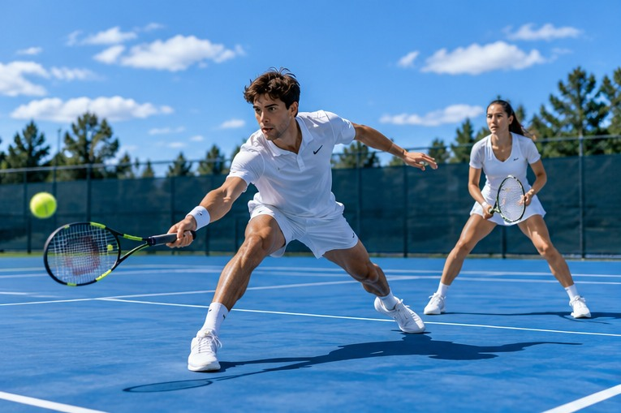
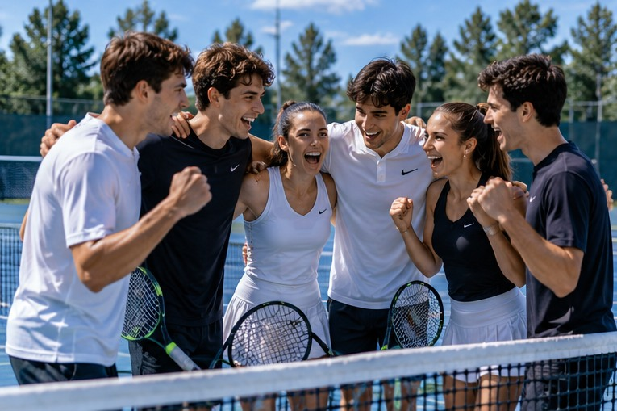
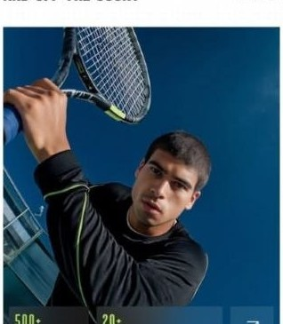

СПОРТ↗12АПР
16:00
16:00
Турнир «Весенний старт»
Открой сезон и проверь свои силы на корте.
⌖ Теннисные кортыПодробнее ↗Будь в игре. Будь в команде. Не пропускай главное.
Фильтр работает без JavaScript — выбери категорию, чтобы увидеть подходящие события.

СПОРТ↗Открой сезон и проверь свои силы на корте.
⌖ Теннисные кортыПодробнее ↗ ВОРКШОП↗
ВОРКШОП↗Техника, точность и уверенность в каждом движении.
⌖ Спортивный залПодробнее ↗
ЛЕКЦИЯ↗ СПОРТ↗
СПОРТ↗
ВОРКШОП↗Первое знакомство с теннисом в дружной группе.
⌖ Спортивный залПодробнее ↗ СПОРТ↗
СПОРТ↗Напиши нам через форму на главной странице и укажи название выбранного мероприятия.
Да, для новичков предусмотрены отдельные тренировки и мастер-классы.
Открой теннисный сезон вместе с клубом. Участников ждут короткие матчи, дружеская атмосфера и призы для победителей.
Время: 16:00–20:00
Место: Теннисные корты
Уровень: любой
Разберём основные элементы подачи, постановку корпуса и работу ног. Практика с тренером подойдёт игрокам с базовым опытом.
Время: 15:00–17:00
Место: Спортивный зал
Поговорим о концентрации, управлении эмоциями и подготовке к важным матчам.
Время: 17:30–18:30
Место: Аудитория 203
Соревнование парных команд, где важны взаимопонимание, тактика и поддержка партнёра.
Время: 14:00–19:00
Место: Теннисные корты
Познакомимся с ракеткой, мячом, базовыми ударами и правилами игры. Инвентарь можно получить в клубе.
Время: 16:00–17:30
Место: Спортивный зал
Неформальная вечерняя игра под освещением корта. Отличный повод познакомиться с участниками клуба.
Время: 21:00–23:00
Место: Центральный корт